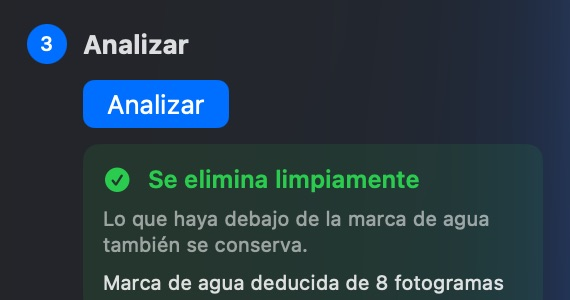
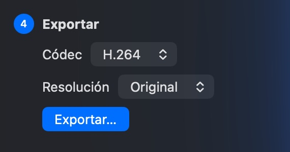
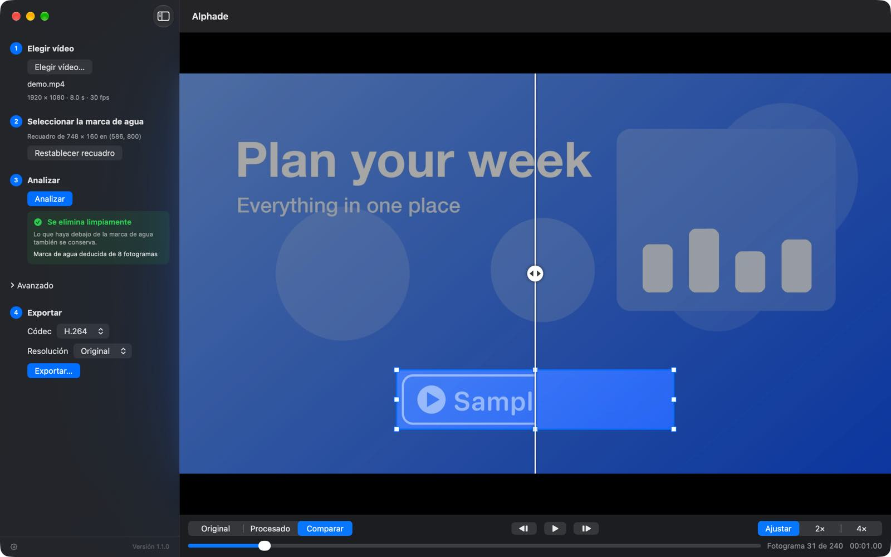

Seleccionar la marca de agua
Abre un vídeo y arrastra un recuadro alrededor de la marca de agua.
Alphade quita las marcas de agua semitransparentes de tus vídeos y recupera la imagen que había debajo, directamente en tu Mac.
Descargar para MacGratis · macOS 26 o posterior
 Original
Alphade
Original
Alphade
Restaurado, no difuminado
Difuminar una marca de agua deja un borrón. Alphade calcula cómo se mezcló la marca con cada fotograma y deshace esa mezcla, así que la imagen de debajo queda limpia.


Cómo funciona

Abre un vídeo y arrastra un recuadro alrededor de la marca de agua.

Alphade estudia el vídeo completo y te dice hasta qué punto puede restaurarlo.

Guarda una copia limpia en H.264 o HEVC, a resolución completa o reducida.
Antes de exportar
Compara el original y el resultado uno junto al otro, avanza fotograma a fotograma y amplía hasta 4×. Solo cambia la zona del recuadro; el resto de la imagen y el audio quedan exactamente igual.

No se sube nada y no hace falta crear ninguna cuenta. Alphade no recopila ningún dato. Consulta la política de privacidad.
Analizar, previsualizar y exportar no cuesta nada: sin compras, sin las limitaciones de una versión de prueba y sin suscripción. La descarga está firmada con un Developer ID y notarizada por Apple.
Funciona mejor con marcas de agua semitransparentes que no cambian de sitio. Mira qué vídeos son compatibles.
Descargar para MacO con Homebrew: brew install --cask vulcanshen/tap/alphade